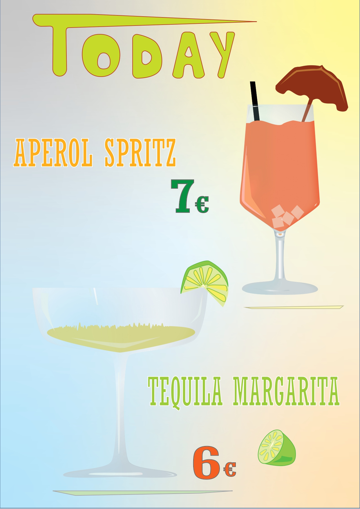
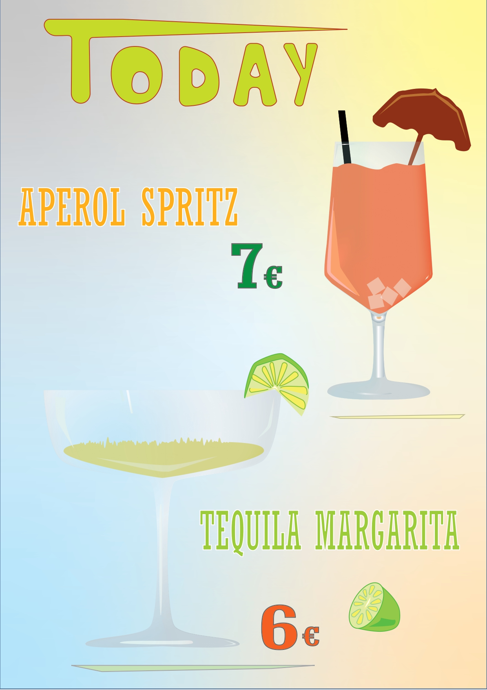

Photoshop sekcija
Ispod se nalaze neki od mojih radova u Photoshopu. Koristila sam alate poput lasso, clone stamp tool, alate za cropanje i rotaciju, dodge, burn itd.


Illustrator sekcija
Od svih programa najviše volim raditi u Illustratoru. Kao primjer, najbolje se ističe prva fotografija gdje sam izrezala različite oblike, pravila različite elemente i bojila ih te tako dobila krajnji vidljivi rezultat. Za kraj sam ga još okrenula za 180 stupnjeva i dobila završni rad.
 

Video sekcija
Za ovaj video posjetila sam mjesto Sister Kurtoši u Zagrebu te snimila proces izrade kurtoša. U videu sam koristila fade out i fade in, position za tekst, time lapse, statični i dinamični tekst, a za početak videa sam napravila gif. Kako bi video bio cjelokupan, ubacila sam sound.
Gif sekcija
U ovoj sekciji možete vidjeti 3 moja gifa, koja sam napravila u programima Adobe Premieru i Photoshopu.


Font sekcija
Font svoga imena i prezimena koji se nalazu u naslovu sam napravila u FontForge-u